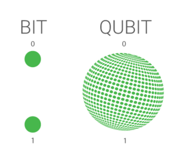

Imagine a universe where information is not limited to zeros and ones, but can exist in multiple states at the same time. That is the world of quantum computing, which harnesses the principles of quantum mechanics to perform complex calculations unimaginable for classical computers.

Qubits are the key to the power of quantum computing. They allow quantum computers to perform calculations in parallel, exponentially faster than classical computers. To understand this better, think of a classical bit like a coin: it can land on either heads or tails. A qubit, the basic unit of information in quantum computing, is like a spinning coin that represents both heads and tails at the same time!
Two unique properties of qubits are superposition and entanglement.
Superposition
A qubit can be in a state of 0, 1, or a linear combination of both simultaneously. Think of a wave: it can be high, low, or a blend of the two. Superposition is like combining waves in the quantum world.
Quantum Entanglement
Imagine two special quantum coins. They are "entangled," meaning that measuring one coin instantaneously determines the state of the other, even when they are far apart, dramatically increasing processing capacity.